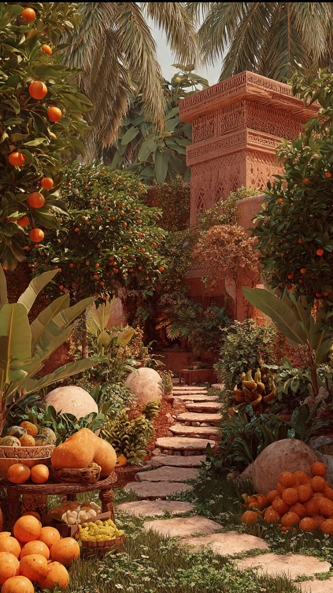

About GreenReach
Founded in 2020 in Johannesburg, GreenReach Community Garden is a non-profit initiative dedicated to promoting urban agriculture, food security, and community wellness. What started as a small plot has grown into a thriving community space hosting workshops, volunteer programs, and educational activities.

Mission, Vision & Team
Mission
To empower underprivileged communities through sustainable urban gardening, education, and food security.
Vision
A city where every neighbourhood has access to fresh produce, gardens flourish in urban spaces, and community members grow not just plants, but connections and health.
Our Team
GreenReach is supported by passionate volunteers, local community leaders, and gardening experts who share knowledge and skills with the community.